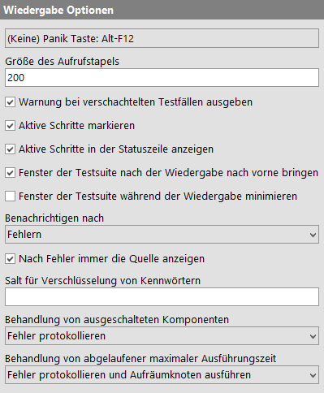
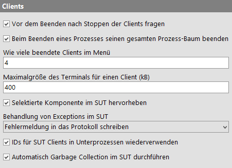
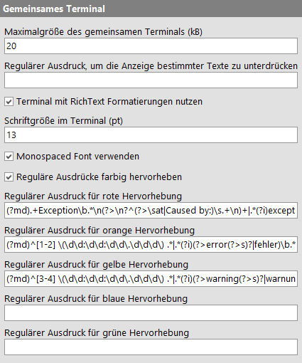
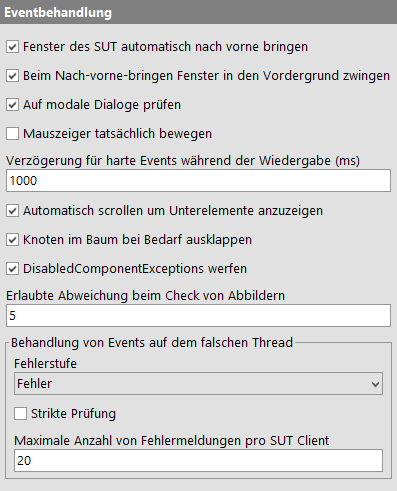
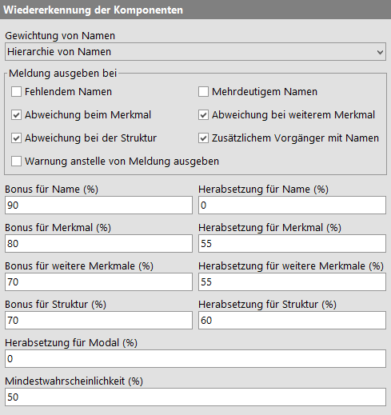
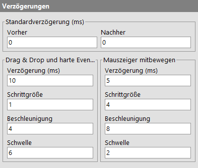
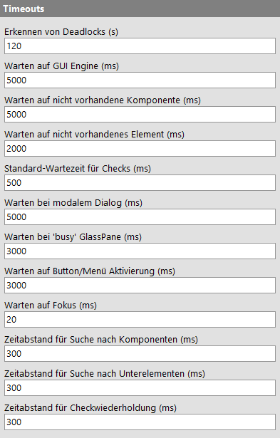
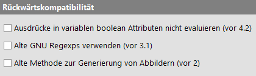

| Version 6.0.3 |
Die folgenden Einstellungen beeinflussen das Verhalten von QF-Test beim Abspielen eines Tests.
|
|  | ||
|
| Abbildung 37.19: Wiedergabe Optionen | ||
Wenn ein Test mit voller Geschwindigkeit läuft, kann es ziemlich schwierig sein, den Fokus in eines von QF-Tests Fenstern zu bekommen um den Test anzuhalten und etwas anderes zu erledigen, ohne dass einem ständig irgendwelche Fenster um die Ohren fliegen. Noch schwieriger wird das ganze im Batchmodus oder bei gesetzten Mauszeiger tatsächlich bewegen oder Fenster des SUT automatisch nach vorne bringen Optionen.
Mit Hilfe dieser Option definieren Sie eine Tastenkombination (Standard ist [Alt-F12]), die sofort alle Tests pausiert, wenn sie in einem beliebigen Fenster gedrückt wird, egal ob im SUT oder in QF-Test (es sei denn Sie haben mehrere Instanzen von QF-Test gleichzeitig am laufen). Nochmaliges drücken der selben Tastenkombination setzt alle Tests fort, sofern Sie nicht manuell einen davon gestoppt oder fortgesetzt haben. In diesem Fall wird der Effekt automatisch auf "Pausieren" zurückgesetzt.
Um den Hotkey festzulegen, klicken Sie in das Feld und drücken Sie die gewünschte Taste oder Tastenkombination.
Auf dem Callstack wird für jeden
'Prozeduraufruf' ein Eintrag mit den Parametern
abgelegt, der nach dem Ende der Prozedur wieder entfernt
wird. Die Größe des Callstacks gibt somit an, wie tief
Prozeduraufrufe geschachtelt sein können. Sie ist beschränkt,
um eine endlose Rekursion zu erkennen und zu verhindern. Eine
Überschreitung des Wertes führt zu einer StackOverflowException. Der Defaultwert von
200 sollte ausreichen, kann aber für sehr komplexe Tests vergrößert
werden.
Die Ausführung von 'Testfall' Knoten sollte nicht verschachtelt werden, da solche 'Testfälle' nicht korrekt im Report dargestellt werden können. Falls diese Option aktiviert ist, wird eine Warnung protokolliert, wenn ein 'Testfall' innerhalb eines anderen 'Testfalls' ausgeführt wird.
Hier legen Sie fest, ob während der Wiedergabe die gerade aktiven Schritte im Baum mit einem kleinen Pfeil markiert werden sollen.
Der gerade ausgeführte Schritt kann auch in der Statuszeile angezeigt werden. Dieses Feature kann mit dieser Option aktiviert werden.
Diese Option ist vor allem im Zusammenhang mit der Option Fenster des SUT automatisch nach vorne bringen interessant. Sie sorgt dafür, dass das Fenster der Testsuite nach der Wiedergabe einer Sequenz wieder nach vorne gebracht wird.
Siehe auch Option Beim Nach-vorne-bringen Fenster in den Vordergrund zwingen.
Ist diese Option gesetzt, minimiert QF-Test das Fenster einer Testsuite während ihre Tests ausgeführt werden. Das Fenster erscheint automatisch sobald der Test beendet oder unterbrochen wird. Diese Funktion ist insbesondere für Windows 2000/XP Systeme hilfreich. Dort ist es Programmen nicht erlaubt, ihre Fenster nach vorne zu bringen, so dass QF-Test die Fenster des SUT nicht hinreichend beeinflussen kann.
Nachdem die Wiedergabe beendet ist, wird in jedem Fall eine Meldung in der Statuszeile angezeigt, die über die Zahl der aufgetretenen Warnungen, Fehler und Exceptions Auskunft gibt. Zusätzlich kann nach Fehlern, Warnung oder generell am Ende jedes Testlaufs ein Nachrichtendialog angezeigt werden. Diese Option legt fest, welche Fehlerstufe die Anzeige dieser Nachricht auslöst.
Ist diese Option gesetzt, wird nach einer Exception bei der Ausführung der Schritt, der zum Fehler geführt hat, angezeigt und selektiert. Dies ist einerseits praktisch, kann andererseits aber störend sein, wenn man gerade etwas editiert. Der zuletzt aufgetretene Fehler kann zudem mittels »Wiedergabe«-»Letzte Fehlerursache anzeigen...« lokalisiert werden.
QF-Test kann Kennwörter im Attribut 'Text' eines 'Texteingabe' Knotens für ein Passwort-Feld und im Attribut 'Detail' eines 'Auswahl' Knotens für einen Login-Dialog eines Web SUT verschlüsselt ablegen. Bei der Ver- und Entschlüsselung solcher Kennwörter kombiniert QF-Test seinen eigenen Schlüssel mit dem hier angegebenen Wert, dem sogenannten Salt. Ohne diesen wäre jeder ohne großen Aufwand in der Lage, Ihre verschlüsselten Kennwörter zu entschlüsseln und im Klartext zu sehen.
Hinweis Lassen Sie sich von dieser Option nicht zu sehr in Sicherheit wiegen. Jeder der Zugriff auf diesen Salt hat und jeder, der Ihre Tests ausführen kann, ist ebenfalls in der Lage, sich die Klartext-Version Ihrer Kennwörter zu verschaffen. Dennoch ist die Verschlüsselung sinnvoll, um zu verhindern, dass in Testsuiten und Protokollen gespeicherte Kennwörter ganz offensichtlich unverschlüsselt herumliegen. Verschlüsselte Kennwörter bieten einen vernünftigen Schutz vor Personen, die keinen Zugriff auf diesen Salt haben.
Falls Sie eine Aktion wiedergeben und die dazugehörige Zielkomponente in der Testsuite ausgeschaltet ist, können Sie hier das gewünschte Verhalten festlegen. Sie können
DisabledComponentStepException werfenFalls Sie eine Sequenz mit maximaler Ausführungszeit wiedergeben und diese Ausführungszeit abgelaufen ist, können Sie hier das gewünschte Verhalten festlegen. Sie können
ExecutionTimeoutExpiredException werfen, welche den Testfall mit möglichen Aufräumaktionen fortsetzt.ExecutionTimeoutExpiredException werfen und den Knoten sofort beenden, ohne Aufräumaktionen.Die obige Definition von möglichen Aufräumaktionen bedeutet, dass Aufräumen- wie auch Catchknoten ausgeführt werden. Keine Aufräumaktionen bedeutet, dass diese Aufräum- und Catchknoten nicht ausgeführt werden.
Verschiedene Parameter für Prozesse und SUT Clients können über die folgenden Optionen eingestellt werden:
|
|  | ||
|
| Abbildung 37.20: Client Optionen | ||
Sind beim Beenden von QF-Test noch Clients aktiv, werden diese nach einer Rückfrage beendet. Ist diese Option ausgeschaltet, werden die Clients ohne Rückfrage beendet.
Der Prozess eines SUT oder eines Hilfsprogramms, das während eines Tests gestartet
wurde, kann mittels eines 'Programm beenden' Knotens oder manuell über das
»Client« Menü beendet werden. Im Fall eines SUT versucht
QF-Test zunächst, mit diesem zu kommunizieren und einen sauberen Aufruf von
System.exit auszulösen. Nicht-Java Programme müssen hart terminiert
werden. Falls das Programm weitere Kind-Prozesse gestartet hat, können diese dabei
je nach Umständen automatisch beendet werden oder nicht.
Es ist normalerweise nicht wünschenswert, solche Kind-Prozesse zu erhalten, da diese Konflikte mit weiteren Tests verursachen oder Dateien blockieren können, die gelöscht oder überschrieben werden sollen. Sofern diese Option nicht deaktiviert wird, versucht QF-Test den gesamten Prozess-Baum für ein aus QF-Test gestartetes Programm zu ermitteln und sicherzustellen, dass beim Beenden dieser Prozess und alles seine Kind-Prozesse explizit terminiert werden.
Hiermit legen Sie die Anzahl der bereits beendeten Clients fest, deren Terminal noch über das »Clients« Menü zugänglich ist.
Die maximale Menge an Text (in Kilobyte), die ein individuelles Client-Terminal aufnimmt. Ist diese Schwelle überschritten, wird alter Text entfernt wenn neuer Text hinzukommt. Der Wert 0 steht für unbegrenzten Text.
Hinweis Diese Option legt auch die Menge an Ausgaben fest, die über die
speziellen Variablen ${qftest:client.output.<name>},
${qftest:client.stdout.<name>} und
${qftest:client.stderr.<name>} verfügbar sind.
Ist diese Option gesetzt, hebt QF-Test die zugehörige Komponente im SUT optisch hervor, wenn ein 'Komponente' Knoten oder ein Knoten, der eine 'Komponente' referenziert, selektiert wird.
Exceptions, die während der Abarbeitung eines Events im SUT auftreten, deuten sehr wahrscheinlich auf einen Fehler im SUT hin. Mit dieser Option legen Sie fest, welche Konsequenzen dieser Fall hat. Sie können
UnexpectedClientException werfenDies ist eine komplexe Option die Sie hoffentlich nie benötigen werden. Wenn ein SUT Client einen Unterprozess startet, der sich seinerseits mit QF-Test verbindet, erhält der neue SUT Client einen speziellen Namen. Dieser wird aus dem Client Namen des ursprünglichen SUT gebildet, gefolgt von ':' und einer numerischen ID. Die erste solche ID ist immer 2, mit aufsteigenden Zahlen für weitere Unterprozesse.
Wird ein Unterprozess beendet und ein neuer gestartet, kann QF-Test entweder die ID des beendeten Prozesses wiederverwenden, oder die IDs weiter hochzählen und eine neue ID vergeben.
In den meisten Fällen ist es besser die IDs für Unterprozesse wiederzuverwenden. Ein typischer Fall ist, dass ein Unterprozess gestartet, beendet und wieder gestartet wird. Wenn Sie diese Option aktivieren können Sie in einem solchen Fall den Unterprozess immer mit dem gleichen Namen adressieren.
In einer komplexeren Situation können eventuell diverse Unterprozesse relativ willkürlich gestartet und beendet werden, je nach Ablauf eines Tests. In diesem Fall ist die Vergabe einer immer neuen ID deterministischer.
In jedem Fall wird der Zähler wieder zurückgesetzt, wenn der ursprüngliche SUT Client neu gestartet wird.
Normalerweise führt QF-Test im SUT automatisch eine volle Garbage Collection durch, nachdem einige hundert 'SUT Skript' Knoten ausgeführt wurden. Dies ist notwendig, da der standard Mechanismus zur Garbage Collection in Java zu einem OutOfMemoryError im sogenannten PermGen Space führen kann, obwohl dort problemlos Speicher durch eine Garbage Collection wiedergewonnen werden könnte.
Wenn Sie versuchen, das Speicherverhalten Ihrer Anwendung genauer zu analysieren, kann diese explizite Garbage Collection die Ergebnisse beeinflussen. Für diesen Fall können Sie mit Hilfe dieser Option die Garbage Collection durch QF-Test unterbinden.
Verschiedene Parameter für das gemeinsame Terminal können über die folgenden Optionen eingestellt werden.
|
|  | ||
|
| Abbildung 37.21: Terminal options | ||
Die maximale Menge an Text (in Kilobyte), die das gemeinsame Terminal aufnimmt. Ist diese Schwelle überschritten, wird alter Text entfernt wenn neuer Text hinzukommt. Der Wert 0 steht für unbegrenzten Text.
Durch Angabe eines regulären Ausdrucks in dieser Option können bestimmte Texte in der Terminalausgabe unterdrückt werden.
Standardwert ist leer.
Siehe auch Reguläre Ausdrücke - Regexps.
Aktiviert das RichText Terminal, das eine monospaced Font und die farbige Hervorhebung von selbstdefinierten regulären Ausdrücken erlaubt. Deaktivieren Sie diese Option, wenn sie zum einfachen Terminal zurückwechseln möchten, wie es vor QF-Test Version 4 war.
HinweisQF-Test muss neu gestartet werden, um eine Änderung dieser Option sichtbar zu machen.
Legt die Schriftgröße in Punkten im gemeinsamen Terminal fest.
Diese Option hat nur einen Effekt, wenn Terminal mit RichText Formatierungen nutzen aktiv ist.
Wenn aktiviert, wird für das gemeinsame Terminal ein monospaced Font verwendet.
Diese Option hat nur einen Effekt, wenn Terminal mit RichText Formatierungen nutzen aktiv ist.
Mit dieser Option kann die farbige Hervorhebung von selbstdefinierten regulären Ausdrücken ein- und ausgeschaltet werden.
Diese Option hat nur einen Effekt, wenn Terminal mit RichText Formatierungen nutzen und Reguläre Ausdrücke farbig hervorheben aktiv sind.
In dieser Option kann ein regulärer Ausdruck für Ausgaben definiert werden, die rot hervorgehoben werden sollen.
Diese Option hat nur einen Effekt, wenn Terminal mit RichText Formatierungen nutzen und Reguläre Ausdrücke farbig hervorheben aktiv sind.
Standardwert ist:
(?md).+Exception\b.*\n(?%gt;\n?^(?%gt;\sat|Caused by:)\s.+\n)+|.*(?i)exception(?%gt;s)?\b.*
Dadurch werden auch typische Java Stack-Traces bei Exceptions rot hervorgehoben.
Siehe auch Reguläre Ausdrücke - Regexps.
In dieser Option kann ein regulärer Ausdruck für Ausgaben definiert werden, die orange hervorgehoben werden sollen.
Diese Option hat nur einen Effekt, wenn Terminal mit RichText Formatierungen nutzen und Reguläre Ausdrücke farbig hervorheben aktiv sind.
Standardwert ist:
(?md)^[1-2] \(\d\d:\d\d:\d\d\.\d\d\d\) .*|.*(?i)(?%gt;error(?%gt;s)?|fehler)\b.*
Dadurch werden auch Fehler-Protokollmeldungen hervorgehoben.
Siehe auch Reguläre Ausdrücke - Regexps.
In dieser Option kann ein regulärer Ausdruck für Ausgaben definiert werden, die gelb hervorgehoben werden sollen.
Diese Option hat nur einen Effekt, wenn Terminal mit RichText Formatierungen nutzen und Reguläre Ausdrücke farbig hervorheben aktiv sind.
Standardwert ist:
(?md)^[3-4] \(\d\d:\d\d:\d\d\.\d\d\d\) .*|.*(?i)(?%gt;warning(?%gt;s)?|warnung(?%gt;en)?)\b.*
Dadurch werden auch Warnungs-Protokollmeldungen hervorgehoben.
Siehe auch Reguläre Ausdrücke - Regexps.
In dieser Option kann ein regulärer Ausdruck für Ausgaben definiert werden, die blau hervorgehoben werden sollen.
Diese Option hat nur einen Effekt, wenn Terminal mit RichText Formatierungen nutzen und Reguläre Ausdrücke farbig hervorheben aktiv sind.
Standardwert ist leer.
Siehe auch Reguläre Ausdrücke - Regexps.
In dieser Option kann ein regulärer Ausdruck für Ausgaben definiert werden, die grün hervorgehoben werden sollen.
Diese Option hat nur einen Effekt, wenn Terminal mit RichText Formatierungen nutzen und Reguläre Ausdrücke farbig hervorheben aktiv sind.
Standardwert ist leer.
Siehe auch Reguläre Ausdrücke - Regexps.
Diese Optionen beeinflussen einige Details bei der Wiedergabe von Events.
|
|  | ||
|
| Abbildung 37.22: Optionen zur Eventbehandlung | ||
Ist diese Option gesetzt, werden Fenster des SUT, für die ein Mouse- oder KeyEvent simuliert wird, bei der Aktivierung nach vorne gebracht. Das vereinfacht den Wechsel zwischen QF-Test und dem SUT, um den Ablauf einer Sequenz zu beobachten.
Siehe auch Optionen Fenster der Testsuite nach der Wiedergabe nach vorne bringen und Beim Nach-vorne-bringen Fenster in den Vordergrund zwingen.
Hinweis Diese Option wird nur für Windows Systeme unterstützt.
Windows erlaubt einer Anwendung nur dann, ein eigenes Fenster nach vorne zu bringen, wenn diese Anwendung bereits den Fokus besitzt. Dies kann es für QF-Test schwierig machen, Fenster des SUT in den Vordergrund zu bringen oder automatisch zwischen dem SUT und QF-Test zu wechseln. Ist diese Option aktiv, setzt QF-Test vorübergehend die Eigenschaft "Immer im Vordergrund", um ein Fenster nach vorne zu zwingen.
Siehe auch Optionen Fenster der Testsuite nach der Wiedergabe nach vorne bringen und Fenster des SUT automatisch nach vorne bringen.
Modale Dialoge sind solche Dialoge, die alle anderen Fenster
blockieren. Sie werden unter anderem für Fehlermeldungen
verwendet. Da QF-Test die Events quasi durch die Hintertür an
den Client schickt, werden diese durch einen modalen Dialog
nicht blockiert und können weitere Aktionen im Hauptfenster
auslösen, was die Situation nach einem Fehler nur noch
verschlimmern kann. Daher wird - sofern diese Option gesetzt
ist - vor der Ausführung jedes Events überprüft, ob das
Zielfenster durch einen modalen Dialog blockiert ist und in
diesem Fall eine ModalDialogException ausgelöst.
Auch diese Option sollte immer eingeschaltet bleiben und wird evtl. ganz entfernt werden.
Ist diese Option gesetzt, wird der Mauszeiger bei der Simulation von Mausevents tatsächlich über den Bildschirm bewegt. Diese Funktion benötigt einen funktionsfähigen AWT Robot.
Obwohl diese Option hauptsächlich dem visuellen Feedback dient, kann sie einen positiven Einfluss auf die Zuverlässigkeit von Tests haben, da sie die Nebeneffekte von Systemevents reduziert die den Test beeinträchtigen könnten. Allerdings sollte diese Option für solche Tests ausgeschaltet sein, bei denen es auf präzise Mausbewegungen ankommt, z.B. für ein Zeichenwerkzeug.
Während der Wiedergabe filtert oder verzögert QF-Test verschiedene "harte" Events, also Events die vom System kommen, z.B. weil der Anwender die Maus bewegt. Insbesondere Popupfenster für Menüs oder Comboboxen sind sehr empfindlich gegenüber solchen Störeinflüssen. Diese Funktionalität erhöht daher die Stabilität von Tests deutlich.
Mit dieser Option lässt sich die maximale Verzögerung für solche Events einstellen. Für den unwahrscheinlichen Fall dass diese Filterung unerwünschte Nebeneffekte hat, kann sie mit dem Wert 0 ausgeschaltet werden.
Ist diese Option gesetzt, werden die Unterelemente von komplexen Komponenten, die sich in einer Scrollpane befinden, automatisch in den sichtbaren Bereich gescrollt, wenn QF-Test darauf zugreift. In diesem Fall können Sie die meisten aufgenommene Events auf Scrollbars oder Scrollbuttons entfernen, da sie für eine korrekte Wiedergabe nicht mehr benötigt werden.
Wenn die Knoten eines Baums als
hierarchische Unterelemente angesprochen werden, können Knoten
als Ziel angegeben werden, die im Moment nicht sichtbar sind,
weil ein übergeordneter Knoten nicht expandiert ist. Ist diese
Option gesetzt, werden in diesem Fall alle übergeordneten
Knoten automatisch expandiert. Andernfalls führt diese
Situation zu einer ComponentNotFoundException.
Wenn QF-Test Events für eine Komponente abspielt, die im Moment
deaktiviert ist, werden diese Events einfach ignoriert. Diese
Situation deutet praktisch immer auf einen Fehler hin, der
durch werfen einer DisabledComponentException
signalisiert wird.
Ältere Testsuiten sind eventuell nicht auf diese Exception
vorbereitet. Diese Testsuiten sollten angepasst werden. Als
schneller Workaround können DisabledComponentExceptions
aber auch durch deaktivieren dieser Option unterdrückt werden.
Hinweis Dies Option war zunächst nur für SWT/Gtk gedacht, hat sich aber als universell anwendbar und nützlich erwiesen.
Die Darstellung von Grafik ist in Java Anwendungen und Web Browsern nicht immer ganz deterministisch. Selbst innerhalb desselben Laufs einer Anwendung auf einem Display mit begrenzter Farbtiefe können die RGB Werte einer Icon Abbildung geringfügig variieren und bei der Ausführung von Tests auf verschiedenen Rechnern sind stärkere Abweichungen möglich. Grafiktreiber, JDK Version und Einstellungen des Betriebssystems spielen auch eine Rolle. Dies mach strikte Checks von Abbildungen unter Umständen fast unbrauchbar.
Um das Problem zu umgehen legt diese Option eine Toleranzschwelle für klassische Checks von Abbildungen fest, bis zu der Abweichungen in den einzelnen Farbanteilen rot, grün und blau eines Pixels erlaubt sind. Mit einem Wert von 0 lassen sich somit exakte Checks erzwingen, allerdings ist hierfür der "identity" Algorithmus besser geeignet (vgl. Details des Algorithmus zum Bildvergleich). Der Standardwert von 5 ist ein guter Kompromiss, bei dem Checks mit Abweichungen, die normalerweise nicht visuell wahrnehmbar sind, erfolgreich sein können.
Ein häufiger Fehler in Swing basierten Java Anwendungen ist der Zugriff auf GUI
Komponenten von einem falschen Thread. Da Swing nicht thread-safe ist, dürfen
solche Aufrufe nur vom AWT Event Dispatch Thread kommen. Andernfalls können
Race-Conditions oder Deadlocks die Folge sein. Erstere können zu subtilen und
schwer auffindbaren Fehlern führen, bei letzteren friert die Anwendung komplett
ein und ist nicht mehr verwendbar. Hintergrund-Informationen zu diesem Thema
finden Sie unter
http://download.oracle.com/javase/tutorial/uiswing/concurrency/index.html,
speziell die Abschnitte zu "Initial Threads" und "The Event Dispatch Thread".
Wenn QF-Test einen Event auf einem anderen als dem AWT Event Dispatch Thread erhält, gibt es eine Fehlermeldung zusammen mit einem aktuellen Stacktrace aus, der bei der Beseitigung des Fehlers hilfreich sein kann. Diese Gruppe von Optionen legt die Fehlerstufe der Meldung fest, ob strikte Tests durchgeführt werden und wie viele Meldungen maximal ausgegeben werden.
Die möglichen Werte für die Option "Fehlerstufe" sind "Fehler" und "Warnung". Wir raten dringend dazu, die Standardeinstellung "Fehler" beizubehalten und derartige Probleme in der Anwendung umgehend zu beseitigen, da sie ein hohes Risiko darstellen.
Falls die Option "Strikte Prüfung" aktiviert ist, werden für sämtliche Events von einem falschen Thread Meldungen ausgegeben. Andernfalls werden "weniger wichtige" Events ignoriert. Die Unterscheidung ist willkürlich und beruht auf der Tatsache, dass es diverse Java Literatur gibt (inklusive früherer Java Dokumentation von Sun), in der es als korrekt dargestellt wird, Swing Komponenten auf einem beliebigen Thread zu initialisieren, solange diese nicht angezeigt werden. Viele Java Programme sind so implementiert und das Risiko ist in diesem Fall in der Tat gering. Für derartigen Code verhindert das Abschalten von "Strikte Prüfung", dass deswegen massenhaft Fehler gemeldet werden und ggf. ernstere Probleme dadurch nicht mehr wahrgenommen werden. Wenn Sie dagegen alle Thread-Verstöße beseitigen wollen, was wir grundsätzlich empfehlen, sollten Sie "Strikte Prüfung" aktivieren.
Wenn Ihre Anwendung Code enthält, der die Thread-Vorgaben verletzt, kann es sein dass daraus eine sehr große Menge von Fehlermeldungen resultiert, was zu einem starken Einbruch der Performance führen kann. Andererseits bringen diese Fehlermeldungen nach der ersten Handvoll keine neue Information mehr. Mittels der Option "Maximale Anzahl von Fehlermeldungen pro SUT Client" kann die Zahl der Fehlermeldungen begrenzt werden.
Mit diesen Optionen können Sie die Wiedererkennung von Komponenten zur Laufzeit eines Tests beeinflussen. Die vorgegebenen Werte sollten im Normalfall gute Ergebnisse liefern, aber wenn Komponenten nicht erkannt werden, können andere Einstellungen vielleicht helfen.
Die Bedeutung der einzelnen Werte ist Abschnitt 44.1 erläutert.
|
|  | ||
|
| Abbildung 37.23: Optionen zur Wiedererkennung | ||
Der Name einer Komponente spielt eine besondere Rolle. Die folgende Optionen beeinflusst das Gewicht, das QF-Test den Namen beimisst:
Hinweis Es gibt zwei Varianten dieser Option, die sehr eng miteinander verknüpft sind. Diese Variante ist während der Wiedergabe aktiv, die andere bei der Aufnahme. Natürlich sollten beide Optionen immer den selben Wert haben - mit einer Ausnahme: Wenn Sie von einer Einstellung zu einer anderen wechseln wollen, müssen eventuell Komponenten in QF-Test aktualisiert werden. Bei diesem Prozess ist es notwendig, zunächst die Einstellung für die Wiedergabe auf dem alten Wert zu lassen und nur die Aufnahme Option umzustellen. Denken Sie aber unbedingt daran, nach Abschluss der Aktualisierung auch die Wiedergabe Option umzustellen.
Diese Option legt fest, welches Gewicht dem Namen bei der Wiedererkennung von Komponenten beigemessen wird. Folgende Einstellungen sind möglich:
Name übertrifft alles
Dies ist die wirksamste und flexibelste Möglichkeit, Komponenten zu erkennen. Sie
setzt allerdings voraus, dass die Namen der Komponenten zumindest pro Fenster
eindeutig sind. Wenn diese Eindeutigkeit gegeben ist, verwenden Sie diese
Einstellung.
WebVerwenden Sie diesen Wert nicht bei Webseiten mit Frames. Für diese
ist "Hierarchie von Namen" besser geeignet.
Hierarchie von Namen
Diese Einstellung sollten Sie verwenden, wenn Namen zwar nicht in jedem Fenster
eindeutig vergeben sind, aber Komponenten mit gleichen Namen zumindest in
unterschiedlichen Komponenten mit verschiedenen Namen enthalten sind, so dass
sich eine Eindeutige Namenshierarchie ergibt. Damit ist die Wiedererkennung immer
noch sehr tolerant gegenüber Veränderungen. Erst wenn Sie eine benannte Komponente
in eine andere benannte Komponente verschieben, muss die Testsuite an diese
Veränderung angepasst werden.
Normales Attribut
Falls es Komponenten mit identischen Namen im SUT gibt, die zudem in der
gleichen Parent Komponente liegen, bleibt nur noch diese Einstellung. Der Name
spielt damit immer noch eine wichtige Rolle, aber kaum mehr als das
'Merkmal' Attribut.
Der Algorithmus zur Wiedererkennung von Komponenten ist sehr tolerant und darauf ausgerichtet, nach Möglichkeit einen Treffer zu finden. Falls die beste Übereinstimmung nicht ganz vollständig ist, gibt QF-Test Information über die verbliebenen Abweichungen aus, wahlweise als Warnung oder einfache Meldung, abhängig von folgenden Optionen:
Ist diese Option gesetzt, wird eine Meldung im Protokoll ausgegeben, wenn beim Ablauf eines Tests eine Komponente angesprochen wird, die noch keinen Namen hat, aber einen brauchen könnte. Soweit möglich wird dabei ein sinnvoller Name vorgeschlagen.
Ist die Option Gewichtung von Namen (Wiedergabe) auf "Name übertrifft alles" oder "Hierarchie von Namen" gesetzt, wird eine Meldung im Protokoll ausgegeben wenn QF-Test auf mehr als eine mögliche Zielkomponente mit dem selben Namen trifft. Diese Meldung kann mit Hilfe dieser Option unterdrückt werden.
Wird eine Komponente im SUT als die bestgeeignete für einen Event oder Check ausgewählt obwohl in einer oder mehrerer Ebenen der Hierarchie das aufgenommene 'Merkmal' nicht mit der Komponente übereinstimmt, sprechen wir von einer "Abweichung beim Merkmal". Ist diese Option aktiviert, wird in einem solchen Fall eine Meldung ausgegeben, die Sie darauf hinweist, dass es eine gute Idee sein könnte, die betroffenen Komponenten zu aktualisieren.
Eine "Abweichung bei weiterem Merkmal" ist analog zur oben beschriebenen Abweichung beim Merkmal, nur dass sie sich auf die weiteren Merkmale mit Status "Sollte übereinstimmen" bezieht. Ist diese Option aktiviert, wird im Fall einer Abweichung eine Meldung ausgegeben, die Sie darauf hinweist, dass es eine gute Idee sein könnte, die betroffenen Komponenten zu aktualisieren.
Eine "Abweichung bei der Struktur" ist analog zur oben beschriebenen Abweichung beim Merkmal, nur dass es hier statt dem Merkmal die Struktur-Attribute 'Index' und 'Insgesamt' sind, die nicht übereinstimmen. Ist diese Option aktiviert, wird in einem solchen Fall eine Meldung ausgegeben, die Sie darauf hinweist, dass es eine gute Idee sein könnte, die betroffenen Komponenten zu aktualisieren.
Eine direkte oder indirekte Parent-Komponente der ausgewählten Zielkomponente im SUT, die nicht in der Hierarchie in QF-Test auftaucht obwohl sie einen Namen hat, stellt eine Abweichung vergleichbar der bei Merkmal oder Struktur dar, sofern die Option Gewichtung von Namen (Wiedergabe) auf den Wert "Hierarchie von Namen" gesetzt ist. Ist diese Option aktiviert, wird in einem solchen Fall eine Meldung ausgegeben, die Sie darauf hinweist, dass es eine gute Idee sein könnte, die betroffenen Komponenten zu aktualisieren.
Ist diese Option aktiviert, werden Abweichungen bei der Wiedererkennung als Warnungen statt einfacher Meldungen ausgegeben. Es kann hilfreich sein, diese Option vorübergehend einzuschalten, um die Sichtbarkeit solcher Abweichung zu erhöhen, z.B. um die Informationen für die Komponenten zu aktualisieren, oder ungewollt erkannten Komponenten auf die Spur zu kommen. Im normalen Testbetrieb erzeugt dies zu viel Rauschen und führt dazu, dass wichtigere Warnungen übersehen werden.
Erklärungen zu den übrigen Optionen für die Wiedererkennung finden Sie in
Abschnitt 44.1. Die zugehörigen SUT Skript Namen dieser Optionen
lauten:
OPT_PLAY_RECOGNITION_BONUS_NAME
OPT_PLAY_RECOGNITION_PENALTY_NAME
OPT_PLAY_RECOGNITION_BONUS_FEATURE
OPT_PLAY_RECOGNITION_PENALTY_FEATURE
OPT_PLAY_RECOGNITION_BONUS_EXTRAFEATURE
OPT_PLAY_RECOGNITION_PENALTY_EXTRAFEATURE
OPT_PLAY_RECOGNITION_BONUS_STRUCTURE
OPT_PLAY_RECOGNITION_PENALTY_STRUCTURE
OPT_PLAY_RECOGNITION_PENALTY_MODAL
OPT_PLAY_RECOGNITION_MINIMUM_PROBABILITY
Hier können Sie Standardwerte für allgemeine Verzögerungen festlegen.
|
|  | ||
|
| Abbildung 37.24: Verzögerungsoptionen | ||
Diese Werte legen die Verzögerung vor und nach der Ausführung jedes Schrittes fest, der keine eigene Verzögerung gesetzt hat. Für Demonstrationszwecke oder zum Debuggen von Tests kann es sinnvoll sein, eine gewisse Verzögerung einzustellen. Im Normalbetrieb sollten Tests problemlos ohne Standardverzögerung laufen.
Die Simulation von Drag&Drop ist knifflig und nur möglich, indem "harte" Mausevents generiert werden, die den Mauszeiger tatsächlich bewegen. Unter Windows kann es dabei unter anderem zu Konflikten mit verschiedenen Maustreibern kommen. Informationen zu Drag&Drop finden Sie auch unter Abschnitt 45.1.
Um Drag&Drop so zuverlässig wie möglich zu machen, sind die Bewegungen des Mauszeigers vielfältig konfigurierbar. Wegen der großen Unterschiede in den Anforderungen für Drag&Drop und harte Mausevents einerseits und Mausbewegungen, die nur zur Visualisierung dienen, andererseits, gibt es zwei komplette Sätze von Optionen für Mausbewegungen. Die Werte für Demo-Mausbewegungen werden ignoriert, wenn die zugehörige Option Mauszeiger tatsächlich bewegen nicht gesetzt ist.
Im Normalfall sollten die Bewegungen für Drag&Drop und harte Events langsamer sein und mehr Interpolationsschritte verwenden, als Demo-Mausbewegungen. Letztere könnten ansonsten Tests deutlich verlangsamen. Alle der folgenden Optionen haben Einfluss auf die Geschwindigkeit des Mauszeigers und Sie werden eventuell ein wenig experimentieren müssen, um den gewünschten Effekt zu erzielen.
Nach jeder einzelnen Mausbewegung wartet QF-Test bis die angegebene Anzahl Millisekunden verstrichen ist. Dieser Wert sollte zwischen 2 und 20 liegen, falls Interpolation eingeschaltet ist, andernfalls zwischen 20 und 200. Mit Interpolation ist 10 ein guter Wert für Drag&Drop , 5 für Demo-Mausbewegungen.
Gibt die Größe der Schritte bei der Interpolation der Mausbewegungen an. Ein Wert von 0 schaltet die Interpolation aus. Gute Werte liegen zwischen 1 und 3 für Drag&Drop und zwischen 2 und 10 für Demo-Mausbewegungen.
Um sinnlose Verzögerungen zu vermeiden, können längere Mausbewegungen beschleunigt werden. Ein wert von 0 schaltet die Beschleunigung aus. Sinnvolle Werte liegen zwischen 1 für sehr geringe und 10 oder mehr für starke Beschleunigung. Gut geeignet sind Werte zwischen 3 und 5 für Drag&Drop und zwischen 6 und 20 für Demo-Mausbewegungen.
Um sicherzustellen, dass kleine Bewegungen, sowie Beginn und Ende einer Bewegung präzise ausgeführt werden, wird die Beschleunigung für Mausbewegungen ausgeschaltet, die weniger Schritte als diese Schwelle benötigen. Gute Werte liegen zwischen 4 und 8 für Drag&Drop und zwischen 0 und 6 für Demo-Mausbewegungen.
Diese automatischen Timeouts reduzieren den Aufwand beim Erstellen einer Testsuite gewaltig. Sie legen fest, wie lange im SUT auf ein Ereignis wie das Erscheinen einer benötigten Komponente gewartet wird, bevor ein Fehler auftritt.
Sie sollten die folgenden Werte nicht zu klein wählen, damit ein "kleiner Schluckauf" des Testrechners nicht einen ansonsten einwandfreien Test abbricht. QF-Test wartet außerdem nicht bei jedem Schritt, bis die maximale Zeit verstrichen ist, sondern arbeitet sofort weiter, sobald die Voraussetzungen erfüllt sind.
|
|  | ||
|
| Abbildung 37.25: Timeout Optionen | ||
Wenn das SUT für den angegebenen Zeitraum nicht reagiert
wird eine DeadlockTimeoutException geworfen. Ein Wert
von 0 unterdrückt die Erkennung von Deadlocks.
Die maximale Zeit, die QF-Test darauf wartet, dass die Zielkomponente eines Events oder eines Checks im SUT verfügbar ist. Direkt nach Herstellung der Verbindung mit dem SUT wird diese Option vorübergehend auf mindestens 30000 gesetzt, um dem SUT Zeit zur Initialisierung zu geben.
Diese Option ist hilfreich für SUTs mit mehreren Engines, z.B. Eclipse mit eingebetteten Swing Komponenten. Ein 'Warten auf Client' Knoten ist fertig, sobald sich die erste Engine mit QF-Test verbindet, sofern nicht sein 'GUI Engine' Attribut das Warten auf eine bestimmte Engine vorschreibt. Um einen darauf folgenden 'Warten auf Komponente' Knoten für eine Komponente der falschen Engine vor dem sofortigen Scheitern zu bewahren, wartet QF-Test zunächst die hier angegebene Zeitspanne ab, um der zweiten GUI Engine eine Chance zu geben, sich ebenfalls mit QF-Test zu verbinden.
Bezieht sich ein Event auf ein Unterelement einer Komponente, wartet QF-Test wie oben beschrieben zunächst darauf, dass die Komponente im SUT verfügbar ist. Anschließend gibt es dem SUT für den hier festgelegten Zeitraum die Chance, das gewünschte Unterelement bereitzustellen.
Diese Option legt einen Standardwert für das 'Wartezeit' Attribute von 'Check' Knoten fest, bei denen dieses Attribute nicht explizit gesetzt ist und die einen "echten" Check im Report darstellen und nicht zur Testablaufsteuerung dienen, d.h. die weder eine Exception werfen noch eine Ergebnisvariable setzen oder einen @report Doctag haben.
Falls Ihre Tests viele 'Check' Knoten ohne explizites 'Wartezeit' enthalten, bei denen davon ausgegangen wird, dass sie fehlschlagen - was für die obigen "echten" Checks unwahrscheinlich ist - können Sie gegebenenfalls die Tests beschleunigen, indem Sie diese Option auf 0 setzen. Allerdings wäre es in diesem Fall vorzuziehen, stattdessen die 'Wartezeit' Attribute der betroffenen Knoten auf 0 zu setzen und diese Option unverändert zu lassen, da sie die Stabilität der Ausführung von Checks generell verbessert.
Wird ein Event an eine Komponente geschickt, deren Fenster von einem modalen Dialog
blockiert ist, wird eine ModalDialogException geworfen. Allerdings werden
modale Dialoge oft nur temporär angezeigt, um den Anwender über einen etwas länger
dauernden Vorgang zu informieren. Ist diese Option auf einen Wert größer 0
gesetzt, wartet QF-Test zunächst die angegebene Zeit, bevor die Exception geworfen
wird. Verschwindet der Dialog vorher, wird der Testlauf normal fortgesetzt.
Dadurch wird die Behandlung von temporären modalen Dialogen stark vereinfacht.
Hinweis Ist die Option Öffnen eines Fensters in 'Warten auf Komponente' konvertieren aktiviert, kann bei der Aufnahme einer Sequenz während der ein temporärer modaler Dialog angezeigt wird, ein 'Warten auf Komponente' Knoten angelegt werden. Wird der Dialog nur kurz angezeigt, sollte dieser Knoten entfernt werden, um Timing Probleme zu vermeiden. Falls das SUT häufig temporäre modale Dialoge einsetzt, ist es sinnvoll, die Option Öffnen eines Fensters in 'Warten auf Komponente' konvertieren zu deaktivieren.
Alternativ zu temporären modalen Dialogen wird in manchen Fällen eine sogenannte GlassPane in Verbindung mit einem Mauszeiger in Sanduhrform eingesetzt um anzuzeigen, dass die Anwendung beschäftigt, also 'busy' ist. Eine GlassPane ist eine unsichtbare Komponente, die ein ganzes Fenster überdeckt und alle Events für dieses Fenster abfängt. Dadurch wird die normale Eventverarbeitung verhindert, was einen Testlauf völlig aus der Bahn werfen kann.
Diese Situation behandelt QF-Test automatisch, indem es auf das Verschwinden dieser
'busy' GlassPane wartet bevor es einen Event, Check etc. ausführt. Ist die
GlassPane nach Verstreichen des in dieser Option angegebenen Timeouts immer noch
aktiv, wird eine BusyPaneException geworfen.
Ist diese Option auf 0 gesetzt, wird nicht auf eine 'busy' GlassPane geprüft,
sondern der Event auf jeden Fall ausgeliefert. Eine BusyPaneException wird in
diesem Fall nie geworfen.
Ein Sonderfall ist der 'Warten auf Komponente' Knoten. Wird auf eine Komponente gewartet (nicht auf deren Abwesenheit), die von einer 'busy' GlassPane verdeckt wird, so wird das Attribut 'Wartezeit' des Knotens gleichzeitig als Wartezeit für die 'busy' GlassPane herangezogen. Auf diesem Weg können Fälle behandelt werden, in denen die Anwendung erwartungsgemäß lange beschäftigt ist, ohne dafür diese Option generell hochzusetzen.
Ein Mausklick, der an ein Menü oder einen Button geschickt wird, wird einfach ignoriert, wenn das Menü oder der Button noch nicht aktiviert sind. Der weitere Ablauf des Tests kommt damit ziemlich sicher durcheinander.
Mit diesem Wert legen Sie fest, wie lange zunächst gewartet
werden darf, ob die Zielkomponente vielleicht doch noch
aktiviert wird, bevor eine DisabledComponentException
geworfen wird. Diese Exception kann durch Deaktivieren der
Option DisabledComponentExceptions werfen unterdrückt werden.
Ist dieser Wert gesetzt, wartet QF-Test vor dem Abspielen von 'Tastaturevents' darauf, dass die Zielkomponente den Fokus besitzt. Diese Option kann einen Test signifikant ausbremsen, wenn die Komponente den Fokus nicht bekommt, daher sollten Sie sie nicht höher als 100 setzen. Ein guter Wert ist 20.
Wenn QF-Test im SUT auf das Erscheinen von Komponenten wartet, kann es sich nicht alleine auf den Event Mechanismus verlassen, sondern muss in regelmäßigen Abständen die Suche wiederholen. Der Zeitabstand für diese Suche wird mit Hilfe dieser Option festgelegt.
Um im SUT auf ein nicht vorhandenes Unterelement einer komplexen Komponente zu warten, kann QF-Test sich nicht auf den Eventmechanismus verlassen, sondern muss immer wieder die Komponente nach dem Unterelement absuchen. Diese Option bestimmt, in welchen Zeitabständen diese Suche ausgeführt wird.
Schlägt ein Check fehl, für den eine 'Wartezeit' vorgesehen ist, überprüft QF-Test immer wieder den Zustand der Komponente, bis dieser den Vorgaben entspricht oder die 'Wartezeit' verstrichen ist. Hiermit legen Sie die Zeitabstände fest, in denen diese Überprüfung durchgeführt wird.
Diese Optionen stellen älteres Verhalten von QF-Test wieder her, welches im Laufe des Entwicklungszykluses so stark verändert wurde, dass die Rückwärtskompatibilität nicht mehr garantiert werden konnte.
|
|  | ||
|
| Abbildung 37.26: Optionen für Wiedergabe Rückwärtskompatibilität | ||
In variablen Attributen, die einen boolean Wert beinhalten, z.B. das 'Als "harten" Event wiedergeben' Attribut von 'Mausevent' Knoten oder das 'Modal' Attribut von 'Fenster' Knoten, wird ein angegebener Ausdruck seit 4.2.0 von Jython ausgewertet.
Seit Version 3.1 verwendet QF-Test die standard Java Syntax für reguläre Ausdrücke. Falls bei älteren Tests dadurch Probleme mit regulären Ausdrücken auftreten, können Sie über diese Option zurück zum GNU Regexp Package wechseln. Weitere Informationen zu regulären Ausdrücken finden Sie in Abschnitt 45.3.
Früher wurde bei der Aufnahme von 'Check Abbild' Knoten für durchsichtige Komponenten immer ein schwarzer Hintergrund aufgenommen. Dadurch stimmte eventuell die Darstellung nicht mit dem Bild überein, das der Anwender zu sehen bekommt. Dieser Fehler wurde korrigiert, so dass normalerweise nun der Hintergrund korrekt gezeichnet wird. Mit dieser Option kann wieder auf die alte, fehlerhafte Methode umgeschaltet werden, falls bereits eine große Zahl von Checks von durchsichtigen Komponenten mit der alten Methode erstellt wurden.
| Letzte Änderung: 6.9.2022 Copyright © 1999-2022 Quality First Software GmbH |